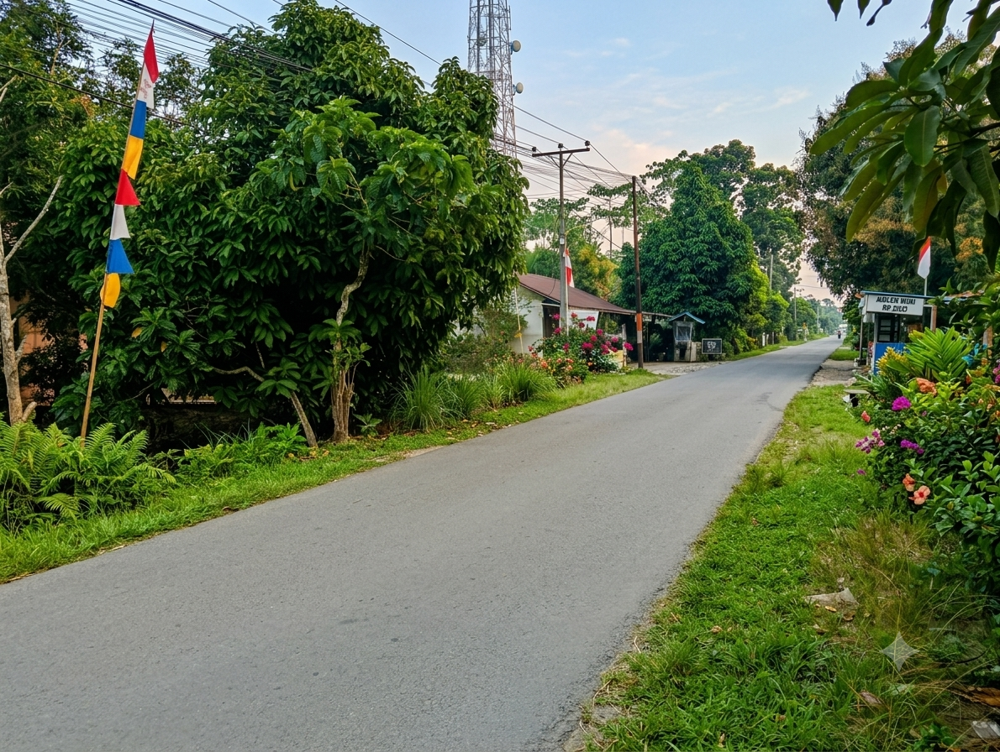

SELAMAT DATANG DI
Pesona Desa
Sungai Kelambu
Menjelajahi keindahan alam, budaya, fasilitas, dan kehidupan masyarakat Desa Sungai Kelambu.
Jelajahi Desa →KENALI LEBIH DEKAT
Keindahan Sungai Kelambu

Desa yang Penuh Pesona
Desa Sungai Kelambu merupakan desa yang memiliki suasana kehidupan masyarakat yang khas dengan lingkungan pedesaan.
Keindahan alam, aktivitas masyarakat, fasilitas umum, serta kehidupan sosial menjadi bagian yang menarik untuk dikenalkan.
Selengkapnya →YANG BISA DITEMUKAN
Pesona Desa Sungai Kelambu
Alam
Menikmati suasana alam dan lingkungan pedesaan yang asri.
Fasilitas
Mengenal berbagai fasilitas yang mendukung kehidupan masyarakat.
Budaya
Mengenal tradisi, kegiatan, dan kehidupan masyarakat desa.
Mari Mengenal Sungai Kelambu
Temukan keindahan alam dan kehidupan masyarakat Desa Sungai Kelambu.
Lihat Galeri